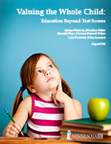

Valuing the Whole Child: Education Beyond Test Scores
Michael Diedrich, Education Fellow
Introduction
The Pawlenty era was a tough time for Minnesota school districts, who saw state education aid stagnate or shrink in the face of inflation. Many communities proved how much they value their school systems by agreeing to take on higher property tax burdens so that their schools could make up the difference and continue to serve an increasingly diverse population with more students of color, more students from families struggling to get by, more students receiving special education services, and more students with limited English proficiency. The Great Recession did significant damage to many communities, but recent years have seen a rise in state aid with a change in political control at the state capitol.
How education money gets spent reflects a combination of statewide values, local values, and the priorities emphasized by state policy. This report examines five key areas of education spending—enriching coursework, student support services, targeted spending for particular student groups, extracurricular activities, and early childhood education—to see how they weathered stingier state budgets and the Great Recession.
Inside the report, you will find four case studies along with statewide data analysing education spending trends: St. Paul, Anoka-Hennepin, Duluth and Bemidji.
Key Findings
- Enriching courses like arts, business, and computer science lost 10 percent of their funding between 2003-04 and 2012-13. This is a statement of shifting instructional priorities, since expenditures on math education increased by 10 percent. Support services also weathered cuts, with some districts seeing particularly large drops in service. Duluth, for example, cut over 60 percent of its student support spending.
- Categorical investments by the state in special education and support for English Language Learners allowed both categories to keep up with growing enrollment.
- While extracurricular expenditures in aggregate remained flat, districts made very different decisions. For example, Anoka-Hennepin increased extracurricular spending while Saint Paul cut it.
- Early childhood education received an increase in investment, possibly reflecting its growing prominence in policy debates.
Recommendations
After reviewing these changes, as well as the literature on what makes for effective investments in each of these important areas, the following four recommendations are offered:
- Increase overall investment for the state.
- Widen the definition of “a good school” to include opportunities.
- Include families, students, teachers, and community members in financial decision-making. Invest in the whole child.
- Now, Minnesota has a state government willing to invest in schools again. While the state economy is doing better than the country as a whole, too much of that recovery has accrued to those who were already comfortable. Many working families are still struggling to get by. It is critical that our statewide investment in public schools build on the progress of the last two years.
- Minnesota’s state and local leaders must make smart choices about how to use these resources in their schools. That means broadening our definition of “a good school” to include the opportunities it offers beyond test scores. It also means inviting democratic participation in financial decision-making. Finally, it means investing in supporting every child appropriately based on what they need and deserve from their public schools.